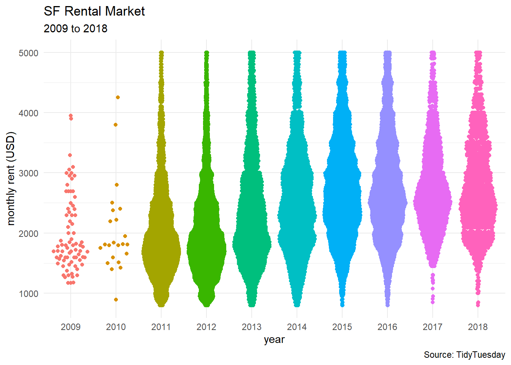
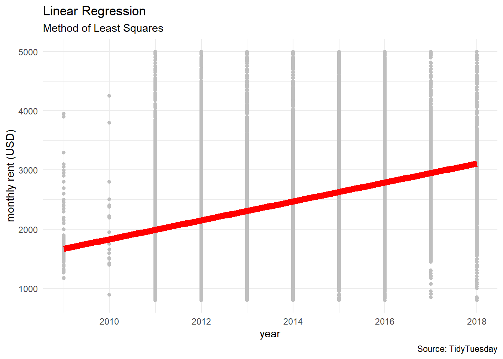
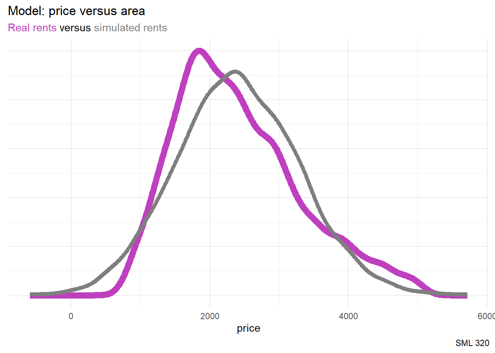
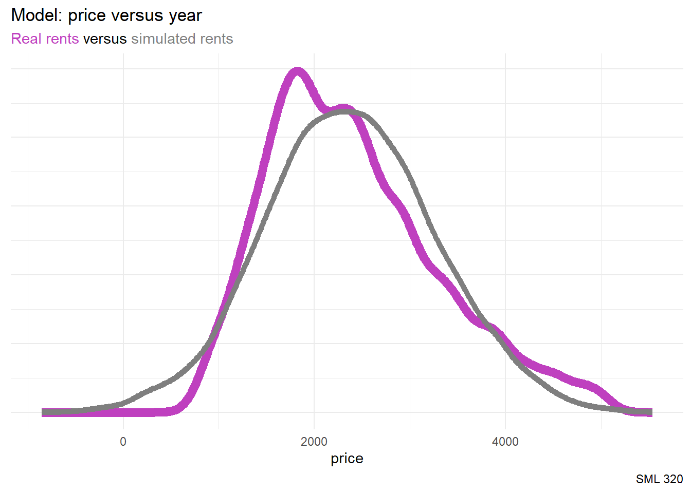
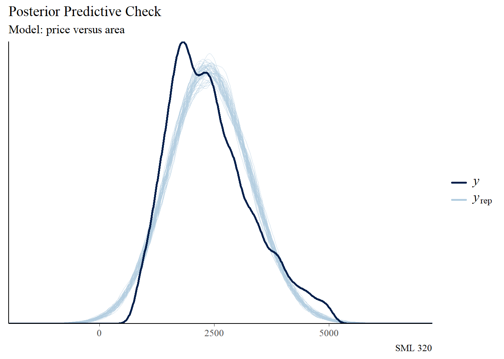
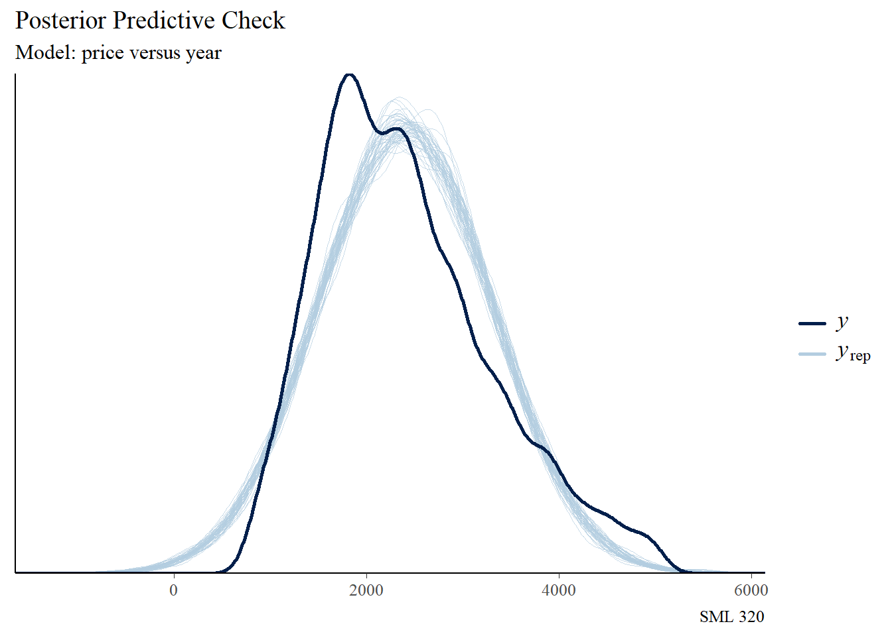
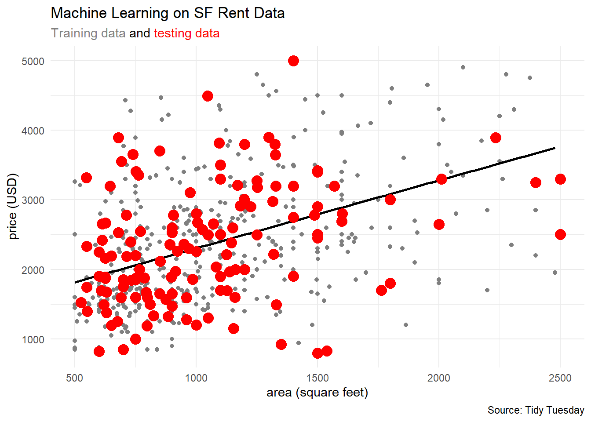
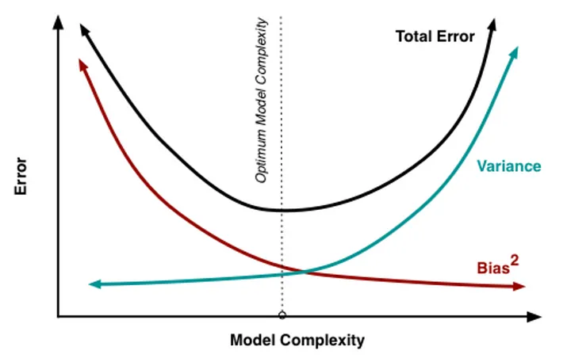
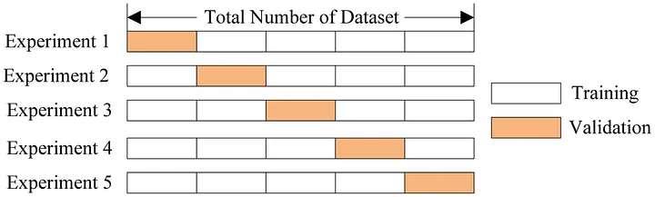
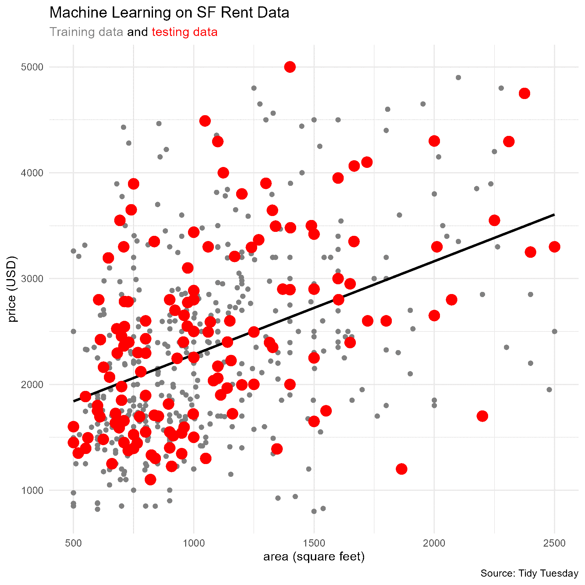

library("bayesrules")
library("bayesplot")
library("ggtext")
library("rsample")
library("rstan")
library("rstanarm")
library("tidyverse")
knitr::opts_chunk$set(echo = TRUE)
rent_raw <- rent_raw <- readr::read_csv("rent.csv")
rent_df <- rent_raw |>
filter(price >= 800 & price <= 5000) |>
filter(sqft >= 500 & sqft <= 2500) |>
filter(year >= 2009)Evaluating Regression Models
Goal: Discuss the fairness and accuracy of Bayesian regression models
Data
source: TidyTuesday
2022-07-05
Pennington, Kate (2018). Bay Area Craigslist Rental Housing Posts, 2000-2018. Retrieved from this site.
- Craigslist listings
- Craigslist listings
Fairness
How was the data collected?
Thousands of listings scraped from Craiglist—a freely available retail message board.
some lack of confidentiality:
- user names removed
- addresses could be scraped
By whom and for what purpose was the data collected?
collected by Dr Kate Pennington, research economist at the US Census Bureau in the Center for Economic Studies
How might the results of the analysis, or the data collection itself, impact individuals and society?
- research investigation, publication, and communication may affect rental market; but probably differently than other media
What biases might be baked into this analysis?
- While Craiglist webscraping produced a sizeable data set, lack of information from other rental market communications may detract from diagnosing trends in market behavior.
Model Assumptions
rentals are independent observations (not true in reality)
linear model between predictor \(X\) and price \(Y\)
- last time: \(\beta_{1} > 0\)
At any \(X\) value, \(Y\) varies normally around \(\mu\) with consistent variability \(\sigma\).
- if these assumptions are valid, then the simulated posterior distribution should model the data well
Case Study: Price versus Time
Exploratory Data Analysis
- response:
price(monthly rent in USD) - predictor:
year(discrete, 2009 to 2018) - commentary: the dataset allows a refined investigation of a time series, but we are going for an intentionally flawed analysis for this lecture session

rent_df$year_fac <- factor(rent_df$year)
rent_df |>
ggplot(aes(x = year_fac, y = price, color = year_fac)) +
ggbeeswarm::geom_quasirandom() +
labs(title = "SF Rental Market",
subtitle = "2009 to 2018",
caption = "Source: TidyTuesday",
x = "year",
y = "monthly rent (USD)") +
theme_minimal() +
theme(legend.position = "none")
rstanarm
For each parameter set \(j\in\{1,2,...,20000\}\), we predict the rent on property \(i\in\{1,2,...,500\}\) by drawing from the Normal data model evaluated at the observed year \(X_i\):
\[Y_{i}^{(j)} | \beta_{0}, \beta_{1}, \sigma \sim N\left( \mu^{(j)}, (\sigma^{(j)})^{2}\right) \text{ with } \mu^{(j)} = \beta_{0}^{(j)} + \beta_{1}^{(j)}X_{i}\]
MCMC
- If the priors are not specified,
rstanarmwill create weakly informative priors through itsautoscaleprocess
set.seed(320)
rent_df_for_stan <- rent_df |>
slice_sample(prop = 0.10)
model_area <- stan_glm(price ~ sqft, data = rent_df_for_stan,
chains = 4, iter = 5000*2, refresh = 0, seed = 320)
model_year <- stan_glm(price ~ year, data = rent_df_for_stan,
chains = 4, iter = 5000*2, refresh = 0, seed = 320)Priors
rstanarm::prior_summary(model_area)Priors for model 'model_area'
------
Intercept (after predictors centered)
Specified prior:
~ normal(location = 2405, scale = 2.5)
Adjusted prior:
~ normal(location = 2405, scale = 2227)
Coefficients
Specified prior:
~ normal(location = 0, scale = 2.5)
Adjusted prior:
~ normal(location = 0, scale = 5.4)
Auxiliary (sigma)
Specified prior:
~ exponential(rate = 1)
Adjusted prior:
~ exponential(rate = 0.0011)
------
See help('prior_summary.stanreg') for more detailsrstanarm::prior_summary(model_year)Priors for model 'model_year'
------
Intercept (after predictors centered)
Specified prior:
~ normal(location = 2405, scale = 2.5)
Adjusted prior:
~ normal(location = 2405, scale = 2227)
Coefficients
Specified prior:
~ normal(location = 0, scale = 2.5)
Adjusted prior:
~ normal(location = 0, scale = 1083)
Auxiliary (sigma)
Specified prior:
~ exponential(rate = 1)
Adjusted prior:
~ exponential(rate = 0.0011)
------
See help('prior_summary.stanreg') for more detailsReality Check
Area Model
model_area_df <- data.frame(model_area)
first_set <- head(model_area_df, 1)
first_set X.Intercept. sqft sigma
1 1408.002 0.9145315 805.5614beta_0 <- first_set$`X.Intercept.`
beta_1 <- first_set$sqft
sigma <- first_set$sigma
set.seed(320)
one_simulation <- rent_df_for_stan |>
mutate(mu = beta_0 + beta_1 * sqft,
simulated_price = rnorm(nrow(rent_df_for_stan),
mean = mu, sd = sigma)) |>
select(sqft, price, simulated_price)head(one_simulation, 5)# A tibble: 5 × 3
sqft price simulated_price
<dbl> <dbl> <dbl>
1 1346 1390 963.
2 1570 2950 1887.
3 700 2595 1492.
4 1046 2008 2984.
5 1000 2650 1893.
subtitle_string <- "<span style='color:#BF40BF'>Real rents</span> versus <span style='color:#7f7f7f'>simulated rents</span>"
one_simulation |>
ggplot() +
geom_density(aes(x = price), color = "#BF40BF", linewidth = 3) +
geom_density(aes(x = simulated_price), color = "#7f7f7f", linewidth = 2) +
labs(title = "Model: price versus area",
subtitle = subtitle_string,
caption = "SML 320") +
theme_minimal() +
theme(axis.title.y = element_blank(),
axis.text.y = element_blank(),
axis.ticks.y = element_blank(),
plot.subtitle = element_markdown()) #use ggtext packageYear Model
model_year_df <- data.frame(model_year)
first_set <- head(model_year_df, 1)
first_set X.Intercept. year sigma
1 -316870 158.5494 826.6045beta_0 <- first_set$`X.Intercept.`
beta_1 <- first_set$year
sigma <- first_set$sigma
set.seed(320)
one_simulation <- rent_df_for_stan |>
mutate(mu = beta_0 + beta_1 * year,
simulated_price = rnorm(nrow(rent_df_for_stan),
mean = mu, sd = sigma)) |>
select(year, price, simulated_price)head(one_simulation, 5)# A tibble: 5 × 3
year price simulated_price
<dbl> <dbl> <dbl>
1 2014 3815 729.
2 2012 1177 1149.
3 2012 1888 1561.
4 2012 2500 2767.
5 2016 4150 2325.
subtitle_string <- "<span style='color:#BF40BF'>Real rents</span> versus <span style='color:#7f7f7f'>simulated rents</span>"
one_simulation |>
ggplot() +
geom_density(aes(x = price), color = "#BF40BF", linewidth = 3) +
geom_density(aes(x = simulated_price), color = "#7f7f7f", linewidth = 2) +
labs(title = "Model: price versus year",
subtitle = subtitle_string,
caption = "SML 320") +
theme_minimal() +
theme(axis.title.y = element_blank(),
axis.text.y = element_blank(),
axis.ticks.y = element_blank(),
plot.subtitle = element_markdown()) #use ggtext packagePPC
The ppcheck() command in the bayesplot package allows us to visually perform a posterior predictive check

bayesplot::pp_check(model_area, nreps = 50) +
labs(title = "Posterior Predictive Check",
subtitle = "Model: price versus area",
caption = "SML 320")
bayesplot::pp_check(model_year, nreps = 50) +
labs(title = "Posterior Predictive Check",
subtitle = "Model: price versus year",
caption = "SML 320")Adjustments
Different Data Structure
- Normal
- Poisson
- Negative Binomial
- Binomial
- etc.
Transformations
- transform \(Y\): \[g(Y_{i}) | \beta_{0}, \beta_{1}, \sigma \sim N(\mu, \sigma^{2}) \text{ with } \mu_{i} = \beta_{0} + \beta_{1}X_{i}\]
- transform \(X\): \[Y_{i} | \beta_{0}, \beta_{1}, \sigma \sim N(\mu, \sigma^{2}) \text{ with } \mu_{i} = \beta_{0} + \beta_{1}h(X_{i})\]
- transform both \(X\) and \(Y\): \[g(Y_{i}) | \beta_{0}, \beta_{1}, \sigma \sim N(\mu, \sigma^{2}) \text{ with } \mu_{i} = \beta_{0} + \beta_{1}h(X_{i})\]
where functions \(g,h\) might take forms like \(\log(X), \sqrt{X}, X^{2}, X^{3},\) etc.
Accuracy
Predictions
Similar to the predict command in base-R, the posterior_predict command in rstanarm takes a model and a data frame.
model_area_predictions <- rstanarm::posterior_predict(
model_area, newdata = rent_df_for_stan
)model_year_predictions <- rstanarm::posterior_predict(
model_year, newdata = rent_df_for_stan
)dim(model_area_predictions)[1] 20000 5514Metrics
- median absolute error
\[\text{MAE} = \text{median}|Y_{i} - Y_{i}^{'}|\]
- scaled median absolute error
\[\text{MAE scaled} = \text{median}\frac{|Y_{i} - Y_{i}^{'}|}{\text{sd}_{i}}\]
- within 50: proportion of observed values \(Y_{i}\) that fall within their 50% posterior prediction interval
- within 95: proportion of observed values \(Y_{i}\) that fall within their 95% posterior prediction interval
Posterior Predictive Summaries
The textbook authors made another helper function in their bayesrules package called prediction_summary
set.seed(320)
rent_df_for_ML <- rent_df |>
slice_sample(prop = 0.01)
bayesrules::prediction_summary(model_area,
data = rent_df_for_ML) mae mae_scaled within_50 within_95
1 529.2686 0.649922 0.5172414 0.9491833bayesrules::prediction_summary(model_year,
data = rent_df_for_ML) mae mae_scaled within_50 within_95
1 566.7108 0.6837057 0.4936479 0.9455535Machine Learning
Training and Testing Sets
allocate about 75% of observations into a training set
- build models from the training set
allocate other 25% of observations into a testing set
- measure error on the testing set
rent_split <- rsample::initial_split(rent_df_for_ML)
rent_train <- rsample::training(rent_split) #about 75% of observations
rent_test <- rsample::testing(rent_split) #about 25% of observationssubtitle_string <- "<span style='color:#7f7f7f'>Training data</span> and <span style='color:#FF0000'>testing data</span>"
rent_train |>
ggplot(aes(x = sqft, y = price)) +
geom_point(color = "#7f7f7f") +
geom_smooth(method = "lm", color = "black", se = FALSE) +
geom_point(aes(x = sqft, y = price),
color = "#FF0000", data = rent_test, size = 4) +
labs(title = "Machine Learning on SF Rent Data",
subtitle = subtitle_string,
caption = "Source: Tidy Tuesday",
x = "area (square feet)",
y = "price (USD)") +
theme_minimal() +
theme(plot.subtitle = element_markdown())
Bias Variance Trade-Off

Cross Validation
Better measurement of errors comes from cross-validation

Training and Testing Data

subtitle_string <- "<span style='color:#7f7f7f'>Training data</span> and <span style='color:#FF0000'>testing data</span>"
for(i in 1:25){
rent_split <- rsample::initial_split(rent_df_for_ML)
rent_train <- rsample::training(rent_split) #about 75% of observations
rent_test <- rsample::testing(rent_split) #about 25% of observations
this_plot <- rent_train |>
ggplot(aes(x = sqft, y = price)) +
geom_point(color = "#7f7f7f") +
geom_smooth(method = "lm", color = "black", se = FALSE) +
geom_point(aes(x = sqft, y = price),
color = "#FF0000", data = rent_test, size = 4) +
labs(title = "Machine Learning on SF Rent Data",
subtitle = subtitle_string,
caption = "Source: Tidy Tuesday",
x = "area (square feet)",
y = "price (USD)") +
theme_minimal() +
theme(plot.subtitle = element_markdown()) #use ggtext package
ggsave(filename = paste0("for_animations/ML_reg_plot_", i, ".png"),
plot = this_plot)
}
# then combined using the website https://ezgif.com/Cross Validation through bayesrules
set.seed(320)
model_area_cv <- bayesrules::prediction_summary_cv(
model = model_area, data = rent_df_for_ML, k = 10
)
model_year_cv <- bayesrules::prediction_summary_cv(
model = model_year, data = rent_df_for_ML, k = 10
)
model_year_cv$folds fold mae mae_scaled within_50 within_95
1 1 565.1712 0.6681426 0.5000000 0.9821429
2 2 483.4587 0.5717974 0.6363636 0.9454545
3 3 492.0445 0.5862028 0.5454545 0.9272727
4 4 641.4328 0.7601855 0.4363636 0.9818182
5 5 666.7055 0.7885234 0.3636364 0.9818182
6 6 584.7050 0.6943528 0.4909091 0.9454545
7 7 715.9861 0.8555493 0.4181818 0.9454545
8 8 483.1197 0.5810148 0.5818182 0.9272727
9 9 676.2278 0.8031427 0.4363636 0.9272727
10 10 463.2350 0.5560119 0.5454545 0.9272727Cross-Validated
The prediction_summary_cv function in the bayesrules package will also average the results across all \(k\) folds and store that information into cv.
model_area_cv$cv mae mae_scaled within_50 within_95
1 519.9732 0.6470611 0.5244156 0.9474675model_year_cv$cv mae mae_scaled within_50 within_95
1 577.2086 0.6864923 0.4954545 0.9491234Quo Vadimus
So far, according to the median absolute errors, year is a worse predictor variable than sqft.
- multivariate models and interaction terms
- Poisson regression, negative binomial
- logistic regression, naive Bayes
Footnotes
- Bias Variance Dilemma by Zaid Alissa Almaliki
- more about
rstanarmpriors
Session Info
sessionInfo()R version 4.3.2 (2023-10-31 ucrt)
Platform: x86_64-w64-mingw32/x64 (64-bit)
Running under: Windows 10 x64 (build 19045)
Matrix products: default
locale:
[1] LC_COLLATE=English_United States.utf8
[2] LC_CTYPE=English_United States.utf8
[3] LC_MONETARY=English_United States.utf8
[4] LC_NUMERIC=C
[5] LC_TIME=English_United States.utf8
time zone: America/New_York
tzcode source: internal
attached base packages:
[1] stats graphics grDevices utils datasets methods base
other attached packages:
[1] rsample_1.1.1 ggtext_0.1.2 lubridate_1.9.3
[4] forcats_1.0.0 stringr_1.5.1 dplyr_1.1.4
[7] purrr_1.0.2 readr_2.1.5 tidyr_1.3.1
[10] tibble_3.2.1 ggplot2_3.4.3 tidyverse_2.0.0
[13] rstanarm_2.21.4 Rcpp_1.0.11 rstan_2.32.5
[16] StanHeaders_2.32.5 patchwork_1.1.2 broom.mixed_0.2.9.4
[19] bayesplot_1.10.0 bayesrules_0.0.2
loaded via a namespace (and not attached):
[1] rstudioapi_0.15.0 jsonlite_1.8.7 magrittr_2.0.3
[4] farver_2.1.1 nloptr_2.0.3 rmarkdown_2.24
[7] vctrs_0.6.5 minqa_1.2.5 base64enc_0.1-3
[10] janitor_2.2.0 htmltools_0.5.6 curl_5.0.2
[13] broom_1.0.5 parallelly_1.36.0 htmlwidgets_1.6.2
[16] plyr_1.8.8 zoo_1.8-12 commonmark_1.9.0
[19] igraph_1.4.3 mime_0.12 lifecycle_1.0.4
[22] pkgconfig_2.0.3 colourpicker_1.2.0 Matrix_1.6-1.1
[25] R6_2.5.1 fastmap_1.1.1 future_1.32.0
[28] shiny_1.7.5 snakecase_0.11.0 digest_0.6.33
[31] colorspace_2.1-0 furrr_0.3.1 ps_1.7.5
[34] crosstalk_1.2.0 labeling_0.4.3 fansi_1.0.6
[37] timechange_0.3.0 mgcv_1.9-0 compiler_4.3.2
[40] proxy_0.4-27 withr_3.0.0 backports_1.4.1
[43] inline_0.3.19 shinystan_2.6.0 QuickJSR_1.1.3
[46] pkgbuild_1.4.0 MASS_7.3-60 gtools_3.9.4
[49] loo_2.6.0 tools_4.3.2 httpuv_1.6.11
[52] threejs_0.3.3 glue_1.6.2 callr_3.7.3
[55] nlme_3.1-163 promises_1.2.1 gridtext_0.1.5
[58] grid_4.3.2 reshape2_1.4.4 generics_0.1.3
[61] gtable_0.3.4 tzdb_0.4.0 class_7.3-22
[64] hms_1.1.3 xml2_1.3.6 utf8_1.2.4
[67] pillar_1.9.0 markdown_1.8 later_1.3.1
[70] splines_4.3.2 lattice_0.21-9 survival_3.5-7
[73] tidyselect_1.2.0 miniUI_0.1.1.1 knitr_1.43
[76] gridExtra_2.3 V8_4.3.0 groupdata2_2.0.2
[79] stats4_4.3.2 xfun_0.40 matrixStats_1.0.0
[82] DT_0.28 stringi_1.8.3 yaml_2.3.8
[85] boot_1.3-28.1 evaluate_0.21 codetools_0.2-19
[88] cli_3.6.1 RcppParallel_5.1.7 shinythemes_1.2.0
[91] xtable_1.8-4 munsell_0.5.0 processx_3.8.1
[94] globals_0.16.2 parallel_4.3.2 rstantools_2.3.1
[97] ellipsis_0.3.2 prettyunits_1.2.0 dygraphs_1.1.1.6
[100] lme4_1.1-33 listenv_0.9.0 scales_1.2.1
[103] xts_0.13.1 e1071_1.7-13 crayon_1.5.2
[106] rlang_1.1.1 shinyjs_2.1.0